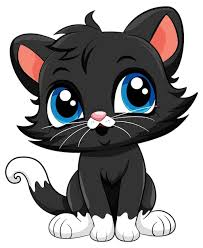
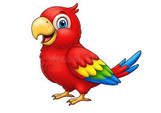

Los gatos son la mascota ideal para quienes buscan una
compañía más autónoma, silenciosa y adaptada a la vida
en espacios pequeños.Los perros son los animales de compañía más populares
del mundo, conocidos como el mejor amigo del hombre por su lealtad y
capacidad para crear vinculos emcionales
A diferencia de perros y gatos, tener un loro como mascota
es integrar a un animal exótico, sumamente inteligente y social
que puede vivir décadas (algunas especies hasta 80 años).